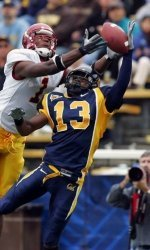
Dante Hughes archive
Photo Room
A clean, rights-aware visual record of the stops, seasons, and moments that shaped the career.
Back to lockerVerified archive
Photos
22 images
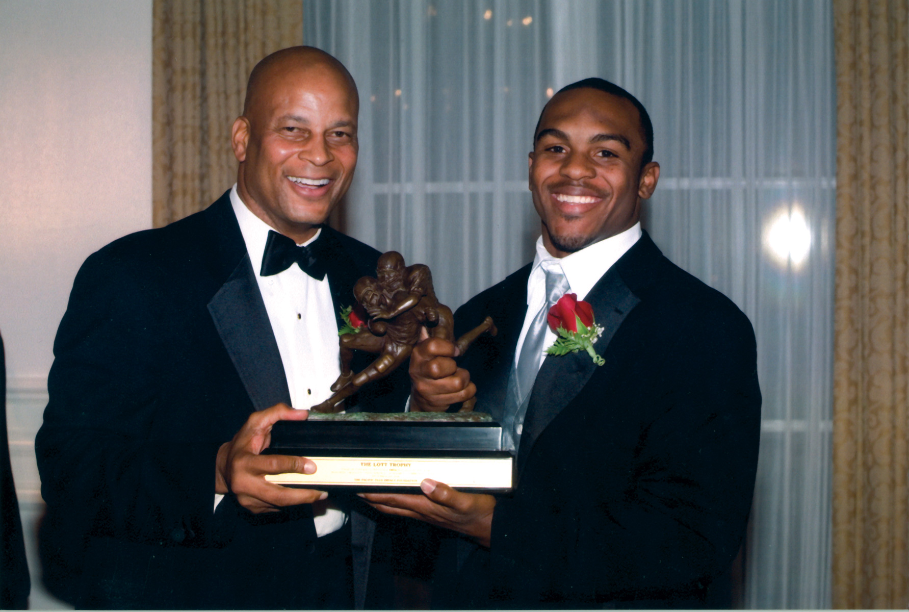
2006 Lott TrophyOff field · 2006 California interceptionCFB · 2006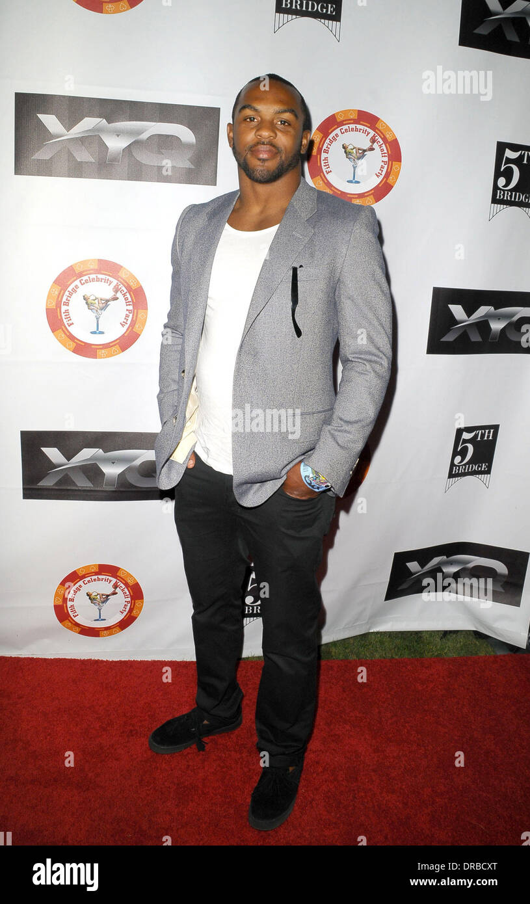
Fifth Bridge kickoffOff field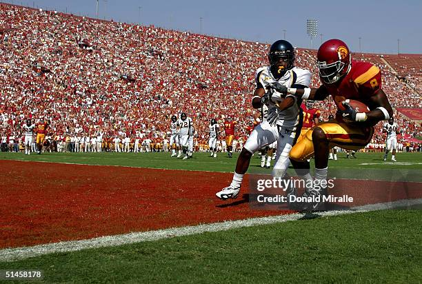
California vs. USCCFB · 2004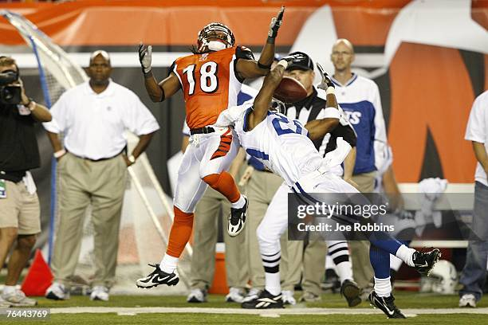
Colts coveragePRO · 2007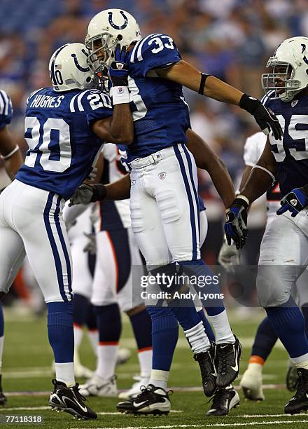
Indianapolis celebrationPRO · 2007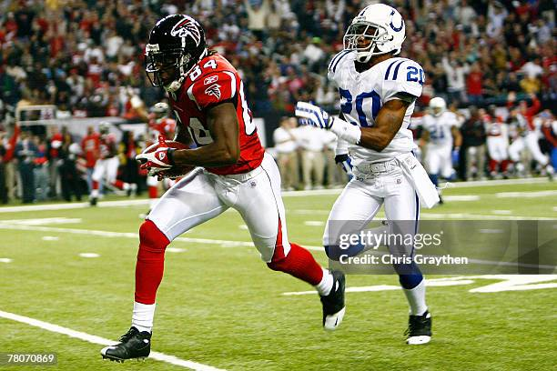
Colts vs. FalconsPRO · 2007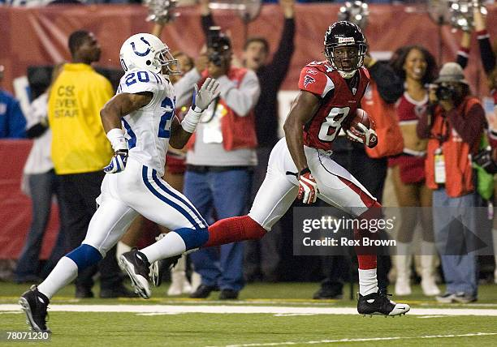
Colts pursuitPRO · 2007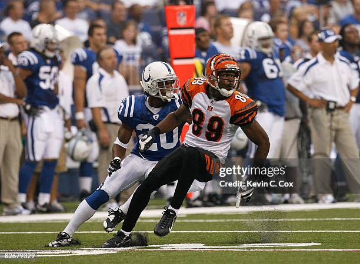
Indianapolis game actionPRO · 2008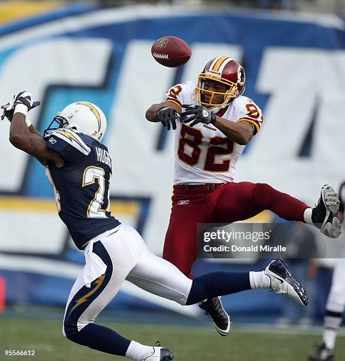
Chargers coveragePRO · 2009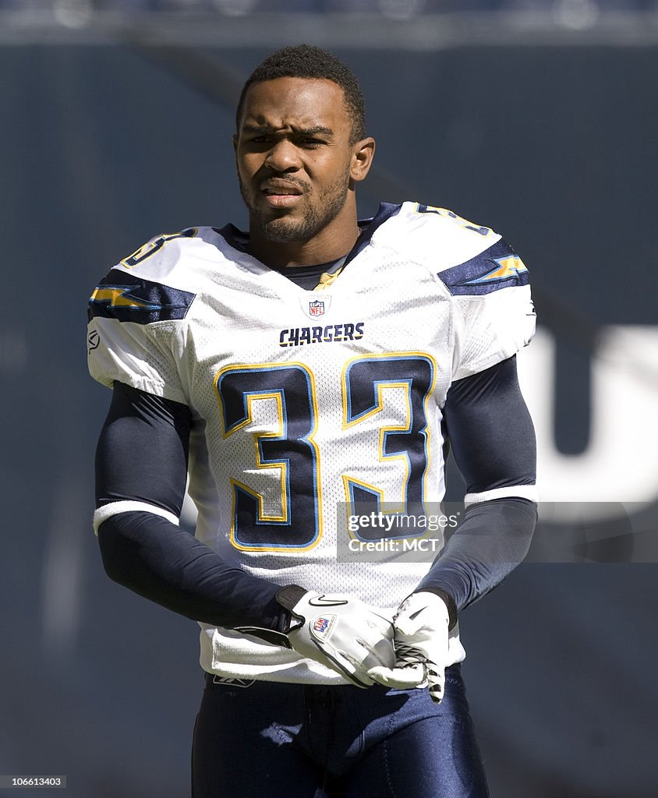
San Diego ChargersPRO · 2011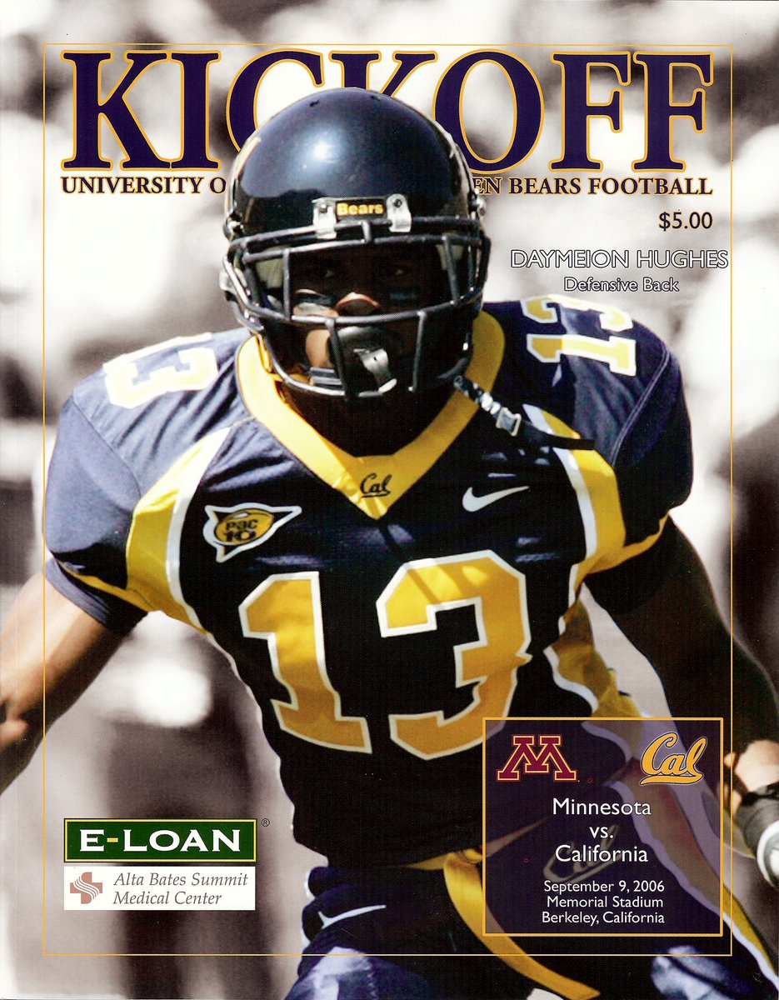
California kickoffCFB · 2006